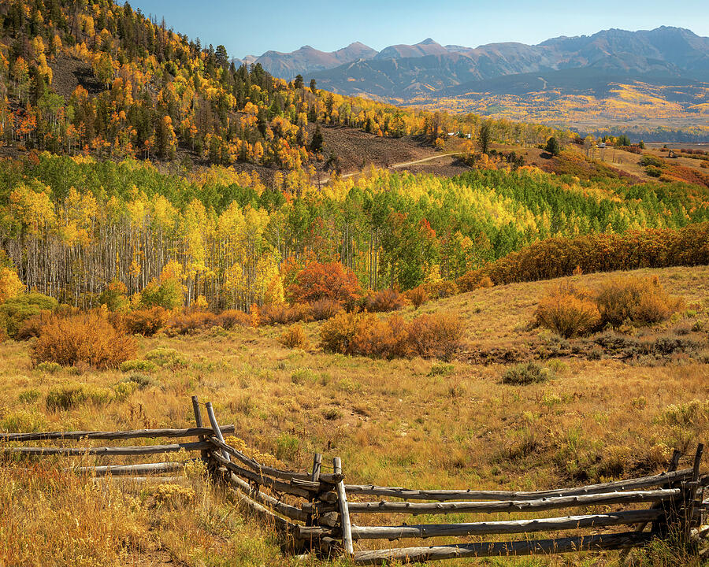
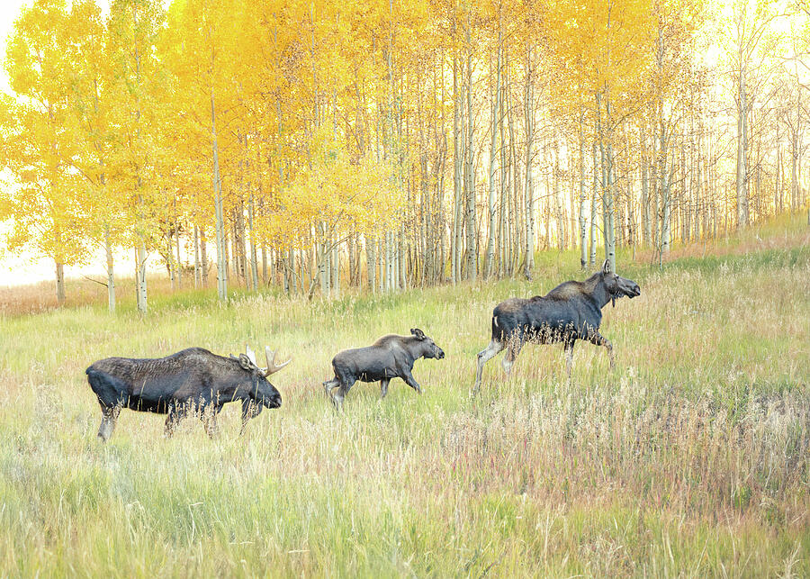

Why I Keep Going Back
Colorado fall is dramatic, but the best images are not always the loudest ones.
Colorado in fall can be almost overwhelming. A whole mountainside can turn yellow at once, and it is easy to point the camera at the brightest patch of aspens and call it good. I have made that mistake plenty of times. Bright color is not enough by itself.
What I am usually looking for now is a place where the color, land, and light work together. A fence line that pulls you into the scene. A mountain shape that gives the image weight. A quiet opening in the trees. Something that makes the photograph feel like a place you want to return to, not just a postcard from a peak weekend.
Roads & Valleys
Some of my favorite Colorado fall images happen along the roads between the famous overlooks.
I like the in-between places. Last Dollar Road, Kebler Pass, Castle Peak, and the backroads around the San Juans and Elk Mountains all have that mix of open country and sudden detail. You might be driving toward a well-known view, then pass a weathered fence or a hillside of aspens that says more about the season than the overlook itself.

When the color is this strong, the temptation is to photograph everything. Slowing down usually leads to better images: cleaner edges, stronger depth, and a print that feels less chaotic on a wall.
Aspen Light
Golden aspens need space and shadow.
The color is what gets your attention, but contrast is what gives the scene depth. A wall of yellow leaves under flat light can look busy once it becomes a print. I usually want some shadow, a break in the trees, or a darker mountain behind the aspens so the image has structure.

That matters when the final image is meant for a home, office, lodge, or hospitality space. A strong autumn image should still feel good after you have lived with it for a while. The goal is warmth and energy, not eye strain.
The Famous Views
Classic Colorado locations still work when the light gives them something new.
There is a reason places like Maroon Bells are photographed so often. They are genuinely beautiful. The challenge is making an image that still feels personal. For me that usually comes down to timing, weather, and how the reflection or foreground helps slow the scene down.

A print like this can hold a larger room because it has a clear center of gravity. The mountain catches the first light, the lake reflection opens the image, and the aspens bring warmth without taking over the whole scene.
Wildlife & Place
Sometimes the best Colorado fall moment is not a landscape at all.
Wildlife changes the whole feeling of a trip. You can plan for sunrise, choose a route, watch the forecast, and still the most memorable image might be a moose family moving through tall grass under yellow aspens. Those moments feel earned because they cannot really be staged.

I like having wildlife pieces in a collection because they break up the pure landscape views. For a cabin, lodge, hallway, office, or gift, they can feel more personal and a little more story-driven.
Choosing A Colorado Fall Print
The right image depends on the feeling you want in the room.
Some Colorado fall photographs are bold statement pieces. Maroon Bells, Castle Peak, and wide views from Kebler Pass can carry a living room, lodge space, or office wall because they have scale. Other images, like aspen forests or wildlife in the trees, feel more intimate and work well in bedrooms, reading spaces, hallways, and smaller rooms.
When I am making and selecting these images, I think about more than what looked impressive in the field. I think about whether the image has breathing room, whether the color will feel warm instead of overwhelming, and whether someone would still enjoy seeing it every day after the excitement of the first view wears off.
- For a large statement wall, choose a mountain scene with strong structure and distance.
- For warmth without too much drama, choose aspens, forest light, or a road scene with softer movement.
- For cabins, lodges, and rustic interiors, fence lines, wildlife, and high-country roads often feel especially natural.
- For modern rooms, look for simpler compositions with clean shapes and less visual clutter.
- For gifts, choose a recognizable Colorado subject or a scene with a clear sense of season and place.